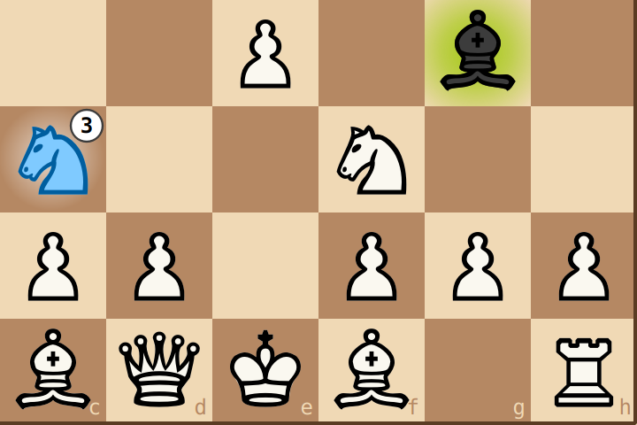
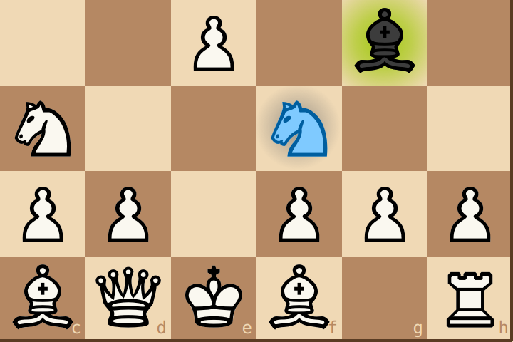
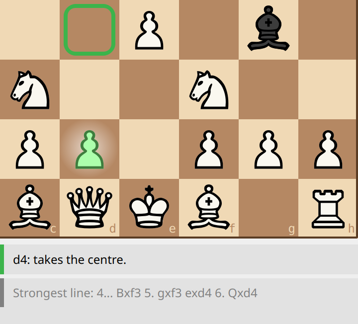
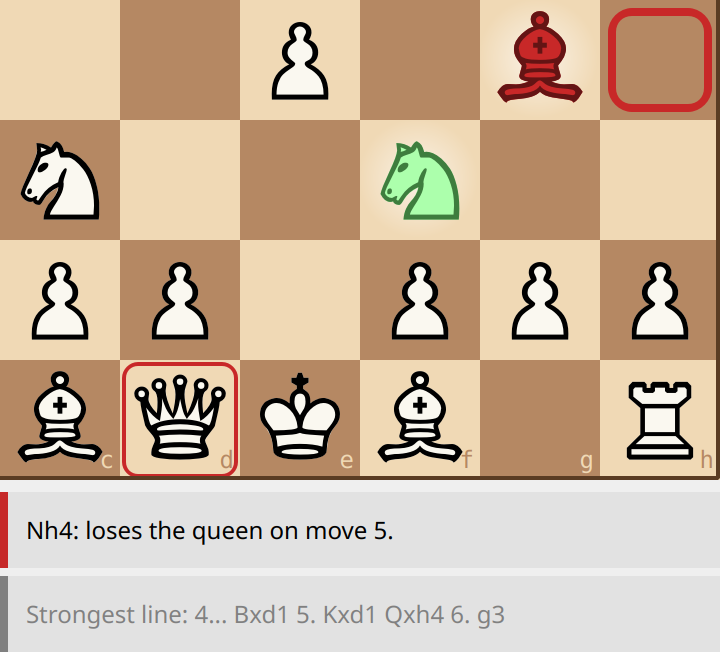
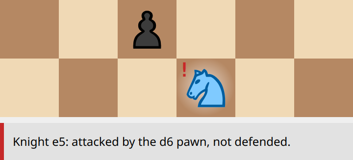
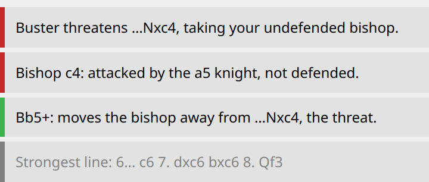
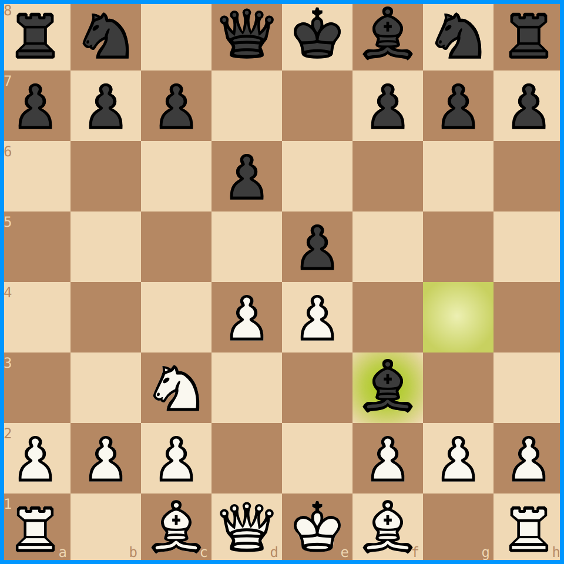
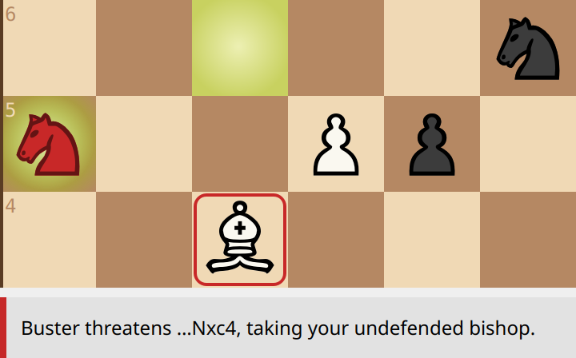
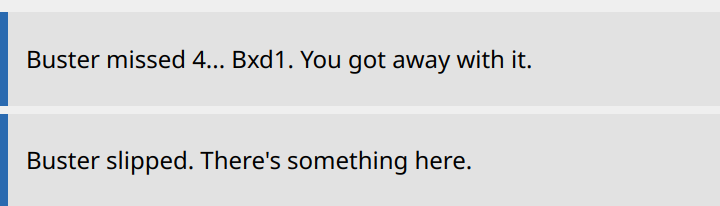

The coach answers questions you ask by lingering: keeping the mouse still on one square for a moment (1.5 s; you can change that in Settings → Linger time). Keep it there as long again for a second, deeper answer. The pictures on this page come from two positions: an opening where Black's bishop on g4 pins the f3 knight to the queen, and, further down the page, the Two Knights Defence, where Black's knight on a5 attacks the bishop on c4.
On one of your pieces: a number in its corner tells how many of its moves aren't mistakes. A grey glow means every move of that piece is a mistake.


Left: the c3 knight has 3 moves that aren't mistakes. Right: the f3 knight is pinned — whatever it does, the g4 bishop takes the queen. Every move of it is a mistake, so it glows grey.
On a move (a piece picked up, the box on its target): the coach says why — it wins material, gives material for play (a sacrifice: "gives the bishop for 2 pawns, and wins it back on move 25"), stops a threat or a mate threat, attacks something, develops a piece, takes the centre. For a mistake: what it loses, or what another move would do ("another move wins a pawn on move 5" — without naming it: that's what H is for). Linger longer for the strongest line: the moves that would follow.
On a red move, the opponent's piece that would punish it, and the square it strikes, flash in red.


Left: the box on d4, green: "takes the centre", and the strongest line under it. Right: the knight to h4, red — the g4 bishop flashes, and so does the queen it would take.
On any hanging piece, yours or the opponent's: the reason in words ("your d5 pawn" when the attacked piece is the opponent's).

Lingering on the knight with the red "!": why it's hanging.
The cards. The answers appear as cards under the move list, each with its own coloured edge, always in this order: on top the threat or the check now (red), then a note about the last move (blue), a hanging piece (red), why the move is good or bad (its verdict's colour), and the strongest line (grey).

The Two Knights: the threat, the hanging bishop, why Bb5+ is the best move (it moves the bishop away with check), and the line that follows.
Space — the play-through. With the box on a move, press Space: the board shows that move, and each further Space plays one more move of its strongest line, until the line ends. A blue frame round the board says you're looking at a line, not the game. Esc (or End) brings you back. The real game isn't touched.

The box was on d4: Space showed 4. d4, and Space again the reply 4... Bxf3.
H — the hint, in two presses: the piece to move (magenta), then its target. Every press counts. (Pictures: The signs on the board.)
T — the threat. What would the opponent do if it could move again right now? T shows it on the board, and the top card says it in words. If there's no real threat, it says so. Picking up a piece (or Esc) puts the board's flash away, the words stay; press T again whenever you like. At Full coaching the threat shows by itself when it's real. In check, the top card says who gives check.

The a5 knight flashes, and so does the bishop on c4 it would take.
Comments after moves. Sometimes a card tells you something on its own:

The blue edge: a note about the move just played. The first: you played the knight to h4, and Buster didn't take the queen.